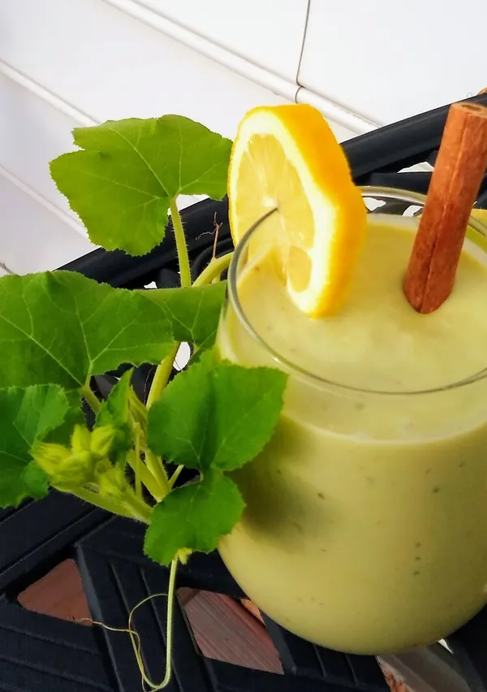
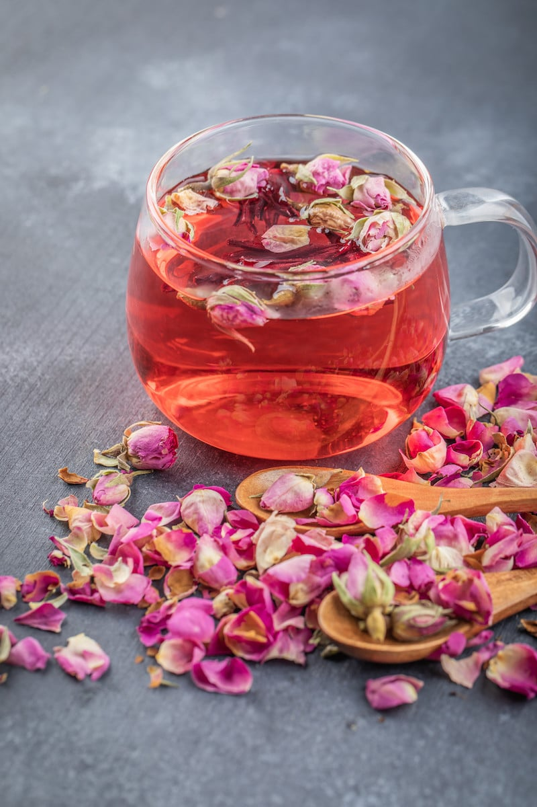

繁體中文
English
飲品專區
用心挑選的飲品，從健康果汁到香醇咖啡，滿足您不同時刻的渴望。
酪梨香蕉奶昔

95元
酪梨香蕉奶昔是健康飲品，以酪梨和香蕉為核心，口感絲滑濃郁，營養豐富且自然甜美。
西班牙拿鐵
95元
西班牙拿鐵是一種特色拿鐵咖啡，比傳統義式拿鐵甜度更高且濃郁，深受亞洲和中東區域喜愛。
美式咖啡
95元
美式咖啡強調濃縮咖啡原味，使用水稀釋，口感接近滴濾咖啡，簡單經典的義式咖啡飲料。
玫瑰花茶

95元
歷史悠久的養生花草茶，以乾燥玫瑰花蕾沖泡，茶香迷人，具有多樣健康效益。
柳橙汁
85元
新鮮柳橙榨取，橙色鮮豔，酸甜可口，富含營養，是全球普及的果汁飲品。